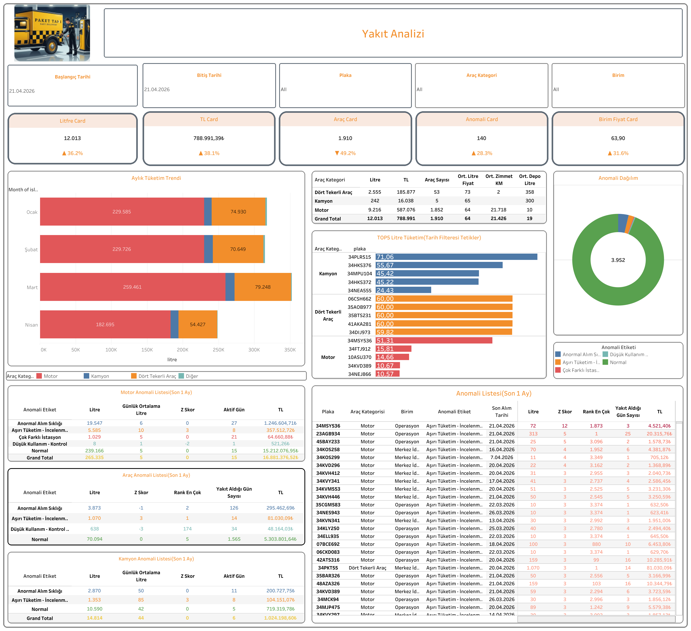

Canlı Rapora Erişin
Güncel yakıt analiz verilerini Tableau üzerinde interaktif olarak görüntüleyin.
Dashboard Hakkında
Ne Gösterir?
Yakıt Takip Analizi, Paket Taxi filosundaki araçların yakıt alım verilerini araç kategorisi, litre, TL ve anomali durumu bazında kapsamlı biçimde analiz eder. Motor, kamyon ve dört tekerlekli araç kategorilerinde ayrı anomali listeleri sunulur.
- Özet KPI Kartları: Litfre Card, TL Card, Araç Card, Anomali Card ve Birim Fiyat Card ile dönemsel karşılaştırma
- Aylık Tüketim Trendi: Araç kategorisi bazında aylık yakıt tüketim grafiği
- Araç Kategorisi Özeti: Dört Tekerlekli Araç, Kamyon, Motor bazında litre, TL, araç sayısı, ortalama litre fiyatı, zimmet KM ve depo litresi
- TOPS Litre Tüketimi: En yüksek tüketimli araçların plaka bazlı sıralaması
- Anomali Dağılımı: Anormal Alım Sıklığı, Aşırı Tüketim, Çok Farklı İstasyon, Düşük Kullanım kategorileri
- Motor / Araç / Kamyon Anomali Listesi: Son 1 aya ait anomali detayları
- Anomali Listesi: Plaka, araç kategorisi, birim, anomali etiketi, son alım tarihi, litre, Z Skoru ve alım gün sayısı
- Filtreler: Başlangıç/bitiş tarihi, plaka, araç kategorisi ve birim
Dashboard Önizleme

Yakıt Takip Analizi — Tableau